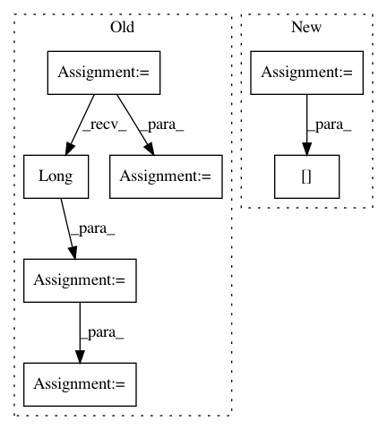

a7cd7a15a9baf741f2b4fcd32f3d8055827889b5,examples/word_language_model/predict.py,,,#,11
Before Change
else:
learner.module_ = torch.load(args.checkpoint)
hidden = learner.module_.init_hidden(1)
input = Variable(torch.rand(1, 1).mul(ntokens).long(), volatile=True)
if args.cuda:
input = input.cuda()
p = learner.predict_proba(np.array([[
corpus.dictionary.word2idx["fish"],
corpus.dictionary.word2idx["sees"],
After Change
learner.initialize()
learner.load_params(args.checkpoint)
words = [corpus.dictionary.idx2word[n] for n in range(10)]
print(words)
In pattern: SUPERPATTERN
Frequency: 3
Non-data size: 7
Instances
Project Name: dnouri/skorch
Commit Name: a7cd7a15a9baf741f2b4fcd32f3d8055827889b5
Time: 2017-08-08
Author: marian.tietz@ottogroup.com
File Name: examples/word_language_model/predict.py
Class Name:
Method Name:
Project Name: ncullen93/torchsample
Commit Name: 6ddf825a4aa1bcf3a35bba8d36bc433fe5ebaa39
Time: 2017-04-24
Author: ncullen@Nicks-MacBook-Pro.local
File Name: torchsample/utils.py
Class Name:
Method Name: th_nearest_interp_3d
Project Name: OpenNMT/OpenNMT-py
Commit Name: 685be43fb35e0b628411e6e6805b75062b01067d
Time: 2018-11-25
Author: benzurdopeters@gmail.com
File Name: onmt/modules/copy_generator.py
Class Name: CopyGeneratorLossCompute
Method Name: _compute_loss